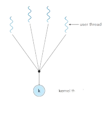
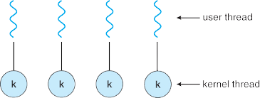
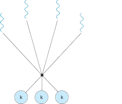
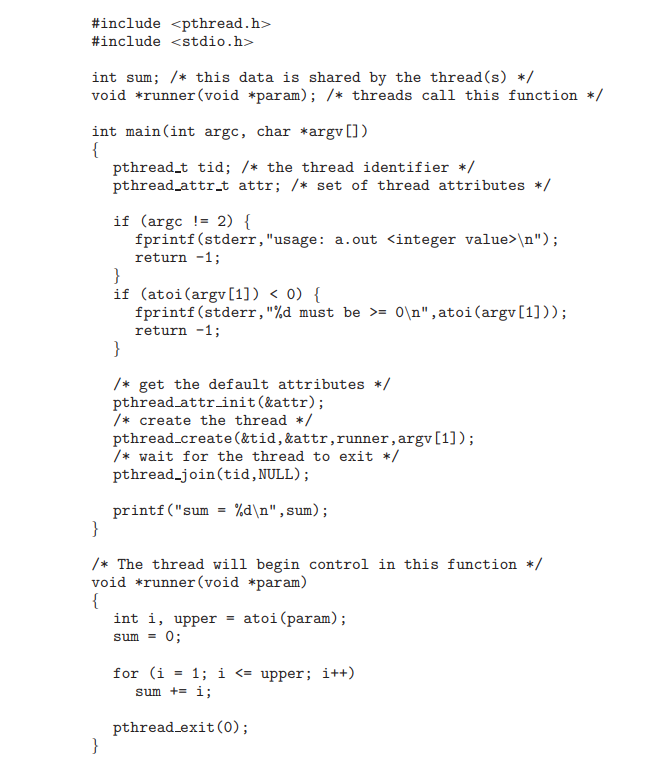

About
A thread is a basic unit of CPU utilization; it comprises a thread
ID, a program counter, a register set, and a stack. It shares with
other threads belonging to the same process its code section, data
section, and other operating-system resources, such as open files
and signals. A traditional (or heavyweight) process has a single
thread of control. If a process has multiple threads of control, it
can perform more than one task at a time.
Multithreading Models
Support for threads may be provided either at the user level, for
user threads, or by the kernel, for kernel threads. User threads are
supported above the kernel and are managed without kernel support,
whereas kernel threads are supported and managed directly by the
operating system. Virtually all contemporary operating
systems—including Windows, Linux, Mac OS X, and Solaris— support
kernel threads. Ultimately, a relationship must exist between user
threads and kernel threads. In this section, we look at three common
ways of establishing such a relationship: the many-to-one model, the
one-to-one model, and the many-to-many model.
• Many To One Model
The many-to-one model maps many user-level threads to one kernel
thread. Thread management is done by the thread library in user
space, so it is efficient. However, the entire process will block if
a thread makes a blocking system call. Also, because only one thread
can access the kernel at a time, multiple threads are unable to run
in parallel on multicore systems. Green threads—a thread library
available for Solaris systems and adopted in early versions of
Java—used the many-to-one model. However, very few systems continue
to use the model because of its inability to take advantage of
multiple processing cores.

• One To One Model

The one-to-one model maps each user thread to a kernel thread. It
provides more concurrency than the many-to-one model by allowing
another thread to run when a thread makes a blocking system call. It
also allows multiple threads to run in parallel on multiprocessors.
The only drawback to this model is that creating a user thread
requires creating the corresponding kernel thread. Because the
overhead of creating kernel threads can burden the performance of an
application, most implementations of this model restrict the number
of threads supported by the system. Linux, along with the family of
Windows operating systems, implement the one-to-one model.
• Many To Many Model
The many-to-many model multiplexes many user-level threads to a
smaller or equal number of kernel threads. The number of kernel
threads may be specific to either a particular application or a
particular machine (an application may be allocated more kernel
threads on a multiprocessor than on a single processor).
Let’s consider the effect of this design on concurrency. Whereas the
many to-one model allows the developer to create as many user
threads as she wishes, it does not result in true concurrency,
because the kernel can schedule only one thread at a time. The
one-to-one model allows greater concurrency, but the developer has
to be careful not to create too many threads within an application
(and in some instances may be limited in the number of threads she
can create).
The many-to-many model suffers from neither of
these shortcomings: developers can create as many user threads as
necessary, and the corresponding kernel threads can run in parallel
on a multiprocessor. Also, when a thread performs a blocking system
call, the kernel can schedule another thread for execution.

Pthreads
Pthreads refers to the POSIX standard defining an API for thread
creation and synchronization. This is a specification for thread
behavior, not an implementation. Operating-system designers may
implement the specification in any way they wish. Numerous systems
implement the Pthreads specification; most are UNIX-type systems,
including Linux, Mac OS X, and Solaris. Although Windows doesn’t
support Pthread natively, some third party implementaions are
available.
The C program shown below demonstrates the basic
Pthreads API for constructing a multithreaded program that
calculates the summation of a non negative integer in a separate
thread. In a Pthreads program, separate threads begin execution in a
specified function. When this program begins, a single thread of
control begins in main(). After some initialization, main() creates
a second thread that begins control in the runner() function. Both
threads share the global data sum.
This example program creates only a single thread. With the growing
dominance of multicore systems, writing programs containing several
threads has become increasingly common. A simple method for waiting
on several threads using the pthread join() function is to enclose
the operation within a simple for loop.

Quiz